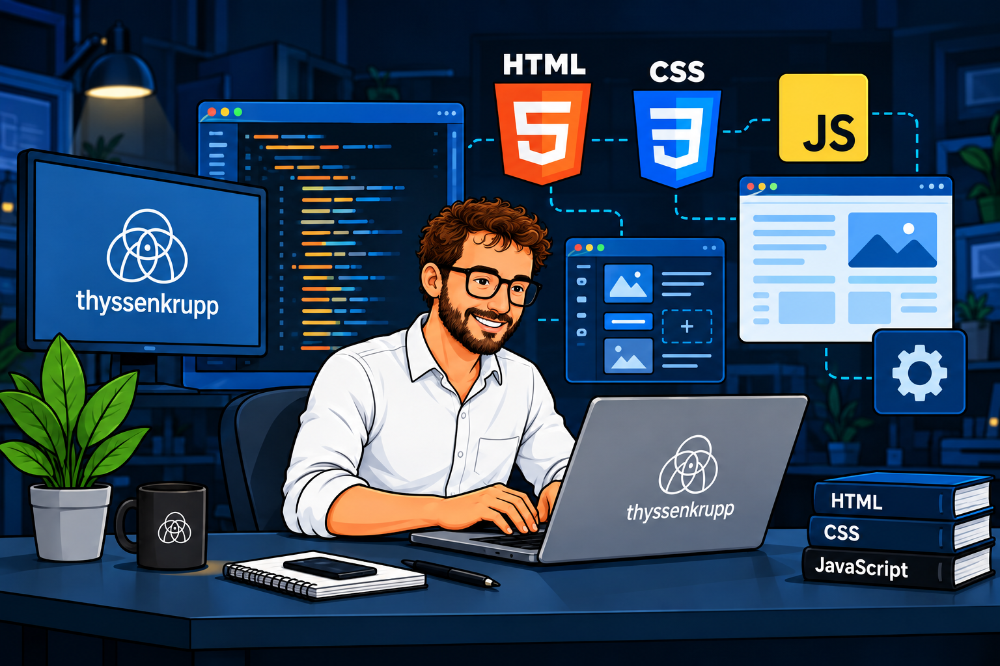
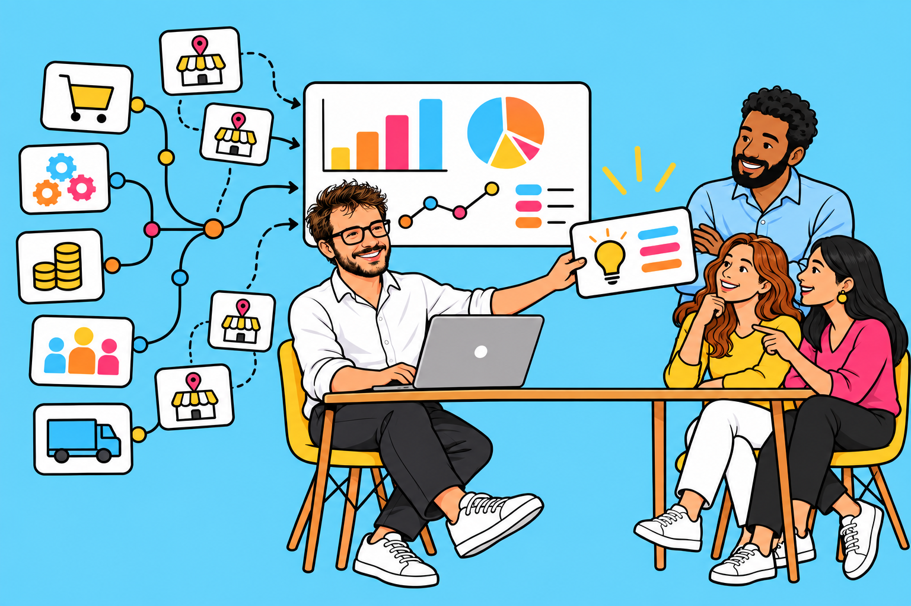
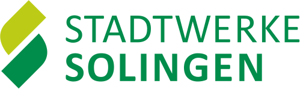

Bewerbung · Stadtwerke Solingen · Remscheid
Vedat
Erdem
Ozkul.
Webmanagement · SEO · Webanalyse
Markenführung · Agentursteuerung

bei Çamsan
Design · Webentwicklung · Werbung · Social Media
Netzwerk
in sieben Bereichen
Mein Arbeitsansatz
Vom Nutzerbedürfnis zur besseren Website.
Verstehen
Sitemaps, Nutzerflüsse und Analysedaten zusammen betrachten. KPIs an Kundenbedürfnissen und Unternehmenszielen ausrichten.
Umsetzen
Webinhalte, Landingpages und wiederverwendbare Komponenten gestalten und im CMS umsetzen.
Verbessern
Funnels und Performance auswerten. Ergebnisse für Teams zugänglich machen und nächste Schritte gemeinsam priorisieren.
Berufserfahrung
Technischer Blick. Erfahrung in Verantwortung.
07/2026 — HEUTE
01
Werkstudent — Corporate Communication, CMS-Management und KI-Lösungen
thyssenkrupp Uhde GmbH · Dortmund
TYPO3 und SEO als aktueller Schwerpunkt. Entwicklung wiederverwendbarer HTML-, CSS- und JavaScript-Komponenten für eine Website-Migration. Aufbau eines automatisierten Power-BI-Systems für sämtliche Web-Traffic-Ströme auf Basis von Matomo-Daten. Deutsch ist meine tägliche Arbeitssprache.
TYPO3SEOMatomoPower BIHTML/CSS/JS
05/2023 — 03/2026
02
Design, Brand & Marketing Manager
Çamsan Ordu A.Ş. · Türkei
SEO und Webinhalte in WordPress und TYPO3; Abgleich von Sitemaps mit Analysedaten und Weiterentwicklung von KPIs und Website-Strukturen. Direkte Führung von sieben Mitarbeitenden und Steuerung von vier externen Agenturen für Design, Webentwicklung, Werbung und Social Media. Jährliches Marketingbudget von 1,5 Mio. Euro; Digitalisierung für 287 Händler und über 120 automatisierte Berichte in sieben Bereichen.
WordPressTYPO3AgentursteuerungTeamführungBudgetverantwortung
08/2020 — 05/2023
03
Senior Architect
Ordu Metropolitan Municipality · Türkei
Leitung von mehr als 20 öffentlichen Infrastruktur- und Stadtentwicklungsprojekten. Koordination interdisziplinärer Teams, externer Partner und öffentlicher Auftraggeber.
20+ ProjekteStakeholderProjektleitung
01/2017 — 08/2020
04
Mitgründer / Architekt
ARTITECH Architecture · Istanbul
Mitgründung und Führung eines Architekturbüros. Kundenanforderungen, Planung und Umsetzung von Architektur- und Innenraumprojekten mit insgesamt mehr als 50.000 m².
50.000+ m²UnternehmertumGestaltung
03/2016 — 01/2017
05
3D Architectural Designer
MME Mimarlık · Istanbul
Architektur- und 3D-Entwürfe, Visualisierungen, technische Zeichnungen und Kundenpräsentationen.
3D-VisualisierungEntwurfDokumentation
01/2015 — 03/2016
06
Site Manager
Nakipoğlu İnşaat · Istanbul
Koordination von Baustellenteams, Termin- und Qualitätskontrolle sowie Projektberichte.
KoordinationQualität
06/2014 — 09/2014
07
Praktikum Architektur
TAV Construction · Istanbul
Dokumentation von Baufortschritt und Terminabweichungen mit MS Project.
MS Project
06/2013 — 08/2013
08
Praktikum Architektur / 3D
TONER Architects · Istanbul
Innenraumentwurf, 3D-Modelle und Renderings.
Design3D
Aus der Praxis
Von Webdaten zu gemeinsamen Entscheidungen.
Ein gemeinsamer Blick auf die Web-Performance.
Ich habe ein Power-BI-System aufgebaut, das sämtliche Web-Traffic-Ströme auf Basis von Matomo-Daten analysiert. Die Online-Dashboards werden fortlaufend automatisiert aktualisiert.
ErfassenMatomo als Datengrundlage
Website-Traffic und Nutzerflüsse zusammenführen.
AnalysierenFunnels, Absprünge & Performance
Kennzahlen entlang relevanter Fragen auswerten.
AutomatisierenFortlaufend aktuelle Dashboards
Aktualisierungen automatisch auslösen.
TeilenEin Datenstand für Teams & Führungskräfte
Ergebnisse online gleichzeitig zugänglich machen.
DAS ERGEBNISAktuelle Informationen gemeinsam nutzen, statt Berichte einzeln weiterzugeben.
Wenn das CMS allein nicht ausreicht.
Ich entwickle wiederverwendbare HTML-, CSS- und JavaScript-Komponenten für Anforderungen, die sich mit den vorhandenen CMS-Funktionen nicht direkt umsetzen lassen. Die Umsetzung stimme ich mit internen Stakeholdern ab.

Webarbeit mit Gesamtverantwortung.
WordPress, TYPO3 und SEO waren Teil meiner Verantwortung für Marke und Marketing. Ich steuerte vier externe Agenturen für Design, Webentwicklung, Werbung und Social Media und verband Analysedaten, Kundenbedürfnisse und Unternehmensziele mit Website-Strukturen und KPIs.

Die verlinkten Unternehmensseiten sind Teamleistungen. Meine konkreten Beiträge sind jeweils im Text beschrieben.
Kompetenzen & Ausbildung
Das Handwerk hinter der Arbeit.
Web & Inhalte
TYPO3 · WordPress · SEO · HTML · CSS · JavaScript · Landingpage-Gestaltung und -Umsetzung
Analyse & Reporting
Matomo · Google Analytics · Power BI · Funnel-Analyse · KPI-Definition · automatisierte Online-Dashboards
Nutzer & Qualität
Customer Journey · Conversion · UX · Barrierefreiheit · DSGVO / Consent
Marke & Steuerung
Agentur- und Dienstleistersteuerung · Teamführung · Budgetmanagement · Stakeholder-Abstimmung · Managementpräsentationen
AUSBILDUNG / 01
M.A.-Studium International Management
Schwerpunkt Data Analysis & Decision-Making
Hochschule Fresenius, Köln
AUSBILDUNG / 02
Bachelor of Architecture
Istanbul Technical University
2011 — 2016Stellenabgleich
Was Sie suchen.
Was ich mitbringe.
Konkrete Berufspraxis im Abgleich mit Ihrer Ausschreibung.
Bewerbung für

Referent*in Webmanagement & ConversionCMS
CMS & technische Entwicklung
TYPO3 und SEO bei Uhde; HTML-/CSS-/JS-Komponenten für die Migration. WordPress- und TYPO3-Praxis bei Çamsan.
PraxisAnalyse
Customer Journey & Conversion
Matomo-Funnels, Nutzerflüsse und Absprungraten; Sitemaps mit Analysedaten abgleichen und KPIs weiterentwickeln.
PraxisInhalte
Landingpages & digitale Inhalte
Eigene Gestaltung und Umsetzung von Landingpages, eingebettet in SEO und die übergreifende Website-Struktur.
PraxisReporting
Web-Performance & Reporting
Automatisiertes Matomo-/Power-BI-System mit gemeinsam verfügbaren Online-Dashboards für Teams und Führungskräfte.
PraxisSteuerung
Agenturen, Teams & Marke
Vier externe Agenturen für Design, Webentwicklung, Werbung und Social Media bei Çamsan gesteuert; sieben Mitarbeitende direkt geführt.
PraxisQualität
UX, Barrierefreiheit & Datenschutz
Erfahrung mit UX, Barrierefreiheit und DSGVO/Consent; Gestaltungskompetenz aus Architektur und Markenmanagement.
PraxisPersönlicher Abgleich auf Basis meiner Berufserfahrung; keine Bewertung durch die Stadtwerke oder ein ATS.
Originalausschreibung ↗Mein Ansatz für Solingen
Erst verstehen.
Dann verbessern.
Ich würde Nutzerwege und Daten gemeinsam betrachten, Hürden mit den Fachbereichen priorisieren, Inhalte und CMS-Komponenten gezielt weiterentwickeln und die Wirkung anhand gemeinsam definierter KPIs prüfen.
Vorgehensvorschlag für die neue Rolle. Keine bereits durchgeführte Untersuchung der Stadtwerke-Websites.
Kontakt
Webmanagement mit Blick fürs Ganze.
Remscheid · Ab 01.01.2027 in Vollzeit verfügbar.
Deutsch B1, aktuell im B2-Training; tägliche Arbeitssprache bei Uhde.
Englisch C1 (zertifiziert) · Türkisch Muttersprache.